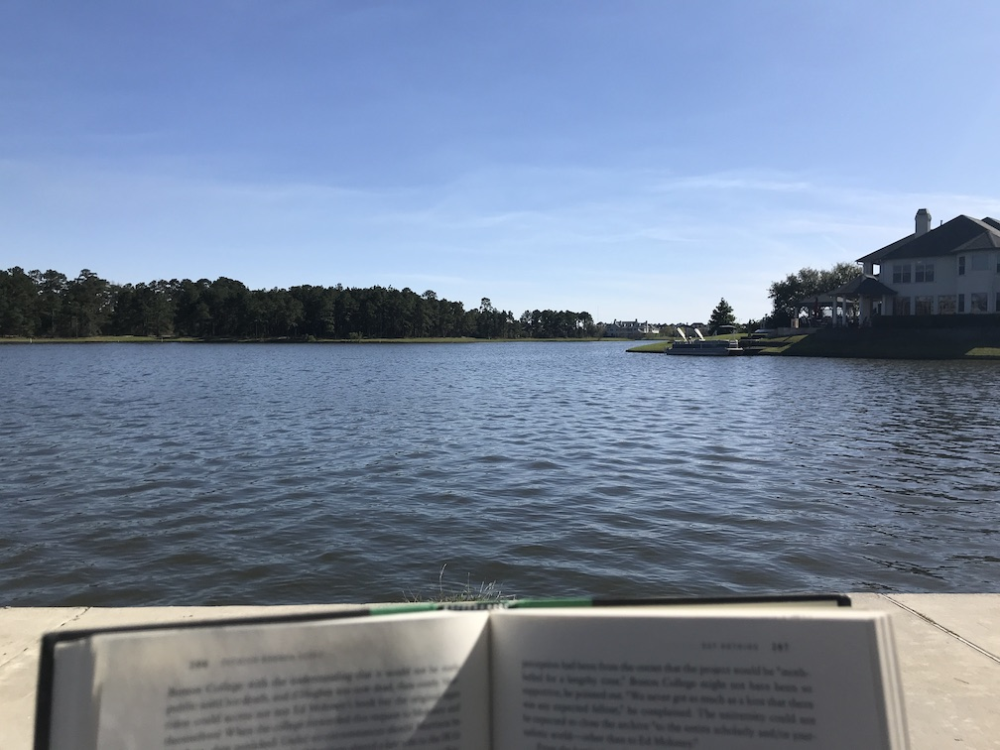

My experience with living through the COVID-19 pandemic (C19) from its inception to my vaccination. First, a personal timeline is discussed, followed by thoughts on specific aspects of the pandemic.
Note to reader: A lot of this is coming from memory a year later, so I may be slightly inaccurate. Note to self: do a better job of recording events like this!
I first heard about C19 circa January 2020 from a Chinese student who worked at my lab. He mentioned something about a virus in his hometown of Wuhan, followed my a look of surprise when I said I hadn't heard of it. (I rarely consume the news, and at this point it was relatively obscure in the U.S.) I carried on as normal with my life, only pausing to Google it for a bit after the conversation.
On 23 January 2020, I received an email from my university stating:
Earlier today, Texas A&M University was notified by the Brazos County Health District that a student may have a possible case of novel coronavirus. [This student had just come back from Wuhan.]
Texas A&M continues to work with its Student Health Services and the Brazos County Health District.
Officials have described the immediate health risk to the campus community as low.
As I recall, shit hit the fan for Texas A&M. International students began wearing masks, much to the amusement of domestic students (who's laughing now!). Hand sanitizer and N95/P95 masks sold out within days. Staple foods flew off the shelves, forecasting what was to come in the next 45 days. The case was confirmed negative, and things went back to pseudo-normal, but with more caution all-around via hand-washing and more masks here and there.
Cases around the world and U.S. continued to increase as we watched and rationalized that it wouldn't, it couldn't get that bad here. After all, we were a fully-developed country and this was just another type of flu, right? Wrong. In early March I read Seeing the Smoke, marking the first instance of me realizing the severity of C19 and the importance (at the time) of properly preparing for what it might bring. I immediately called my father and had an impassioned discussion (read: argument) about why he and my mother should stop whatever it is they were doing and go to the grocery store to stock up. I was greeted with apathy and a you're-blowing-this-out-of-proportion tone, leading to me hanging up on him.
I still remember my last normal memory before everything really kicked off. I was relaxing at Northshore Park in The Woodlands reading Say Nothing and Human Accomplishment on a gorgeous, not-a-cloud-in-the-sky, balmy afternoon waiting for my brother and sister-in-law to make it into town. Children were playing, no masks were in sight, everything was normal. The next day we watched my brother race his half marathon, followed by post-race snacks among throngs of people. Still no masks, still no worries.
I drove back to my parents' home to begin my Spring Break vacation. Next week's classes were soon canceled that Thursday to much excitement from the student body. "Woo-hoo! Another week of vacation!" many of us thought, not understanding that this was just the beginning. It was around this time that fear and panic gripped the nation. Reports were coming out of various cities of toilet paper shortages. My family was confused. Toilet paper? Of all things? But lo and behold, the grocery store shelves were cleaned out. We were not exempt. I accompanied my mother to the grocery store where we filled our cart to the brim with non-perishables, not unlike a vast majority of other shoppers. But this time water was also clearing out. More masks were being worn.
We spent the next few months almost entirely isolated. I ventured to friends' houses a handful of times to hang out in the backyard, but didn't dare go to the forbidden zone: inside. I read War and Peace and quite a bit of online writing, exercised like crazy, played a lot of Call of Duty: Warzone, and worked on this website.
And it stayed like this for months on end. Cases began to rise towards the middle of summer, reaching a monstrous 66,000 cases/day peak in July.